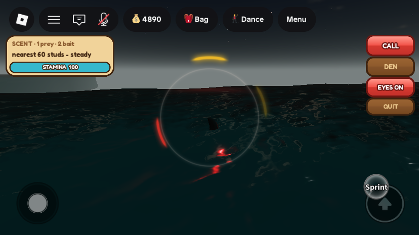
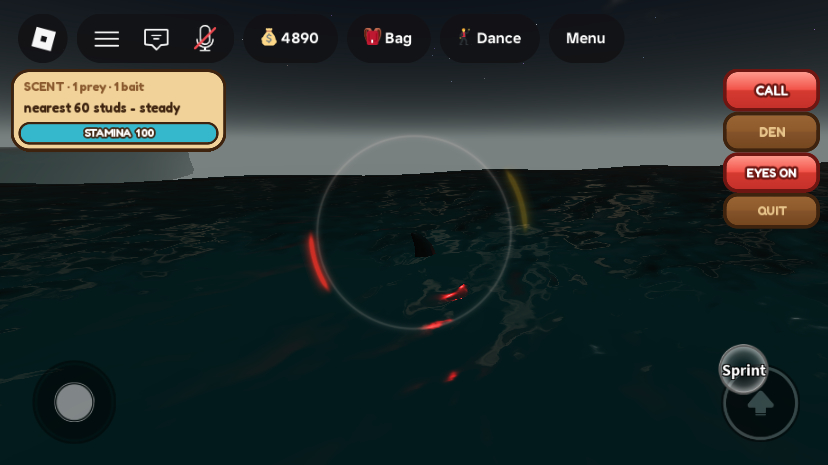
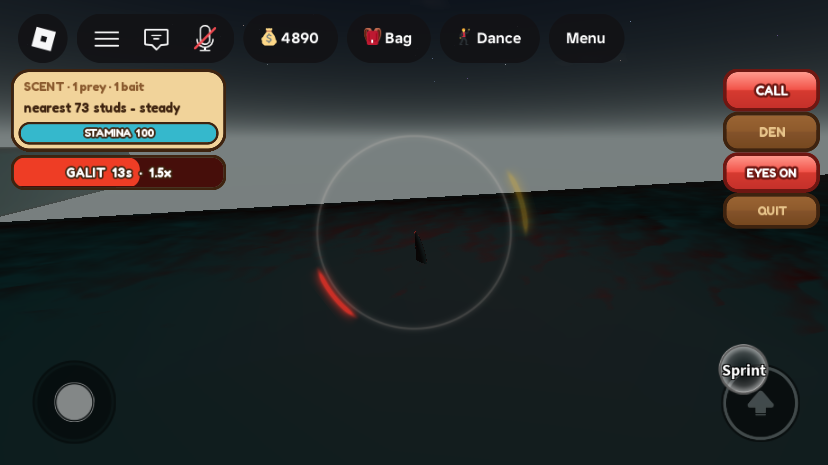

Phase 6: shark bait on the Pating's radar, and Galit
What was asked
- Shark bait also works on the shark role. It shows on the Pating's radar, and eating it makes the shark angry, with a 150% boost for a short time.
- Locked on 29 Sep (roadmap decision 10): "150%" means 1.5× speed for 20 s, with half cooldowns. At 2.5× the shark would outrun the camera.
What changed
1. Bait on the sense ring


- The Pating now smells bait thrown in the water and anyone swimming with bait in hand (or within 10 studs of the water, the same rule as prey). The range is 400 studs, the AI sharks' lure range, where prey is only smelled from 300.
- Bait is drawn as gold arcs (up to 4, nearest first), slightly outside the red prey arcs and brighter the closer it is. A swimmer holding bait shows gold, not red.
- The scent card counts both: "SCENT · 1 prey · 2 bait". With no prey in range it reads "bait 120 studs" in dark gold.
- This is the risk the plan described: a fisher holding bait to lure AI sharks into a lambat now draws Pating players from 400 studs as well.
2. Eating it
- Thrown bait: a Pating whose body comes within 7 studs of it eats it. The thrower gets the usual "A pating took your bait." and the AI sharks stop going for it (it goes through
SharkLure.Consume, as an AI shark's bite does). AI sharks still race for it, and whoever gets there first eats it. In testing, AI sharks ate two test baits within seconds, before the Pating got there. - Held bait: swimming within 6 studs of a swimmer holding bait, or a lunge that hits one, tears one bait off their hook (their stack goes down by one, and they get "A pating tore the bait off your hook."). The same shark can't take bait off the same swimmer again for 8 s. A lunge still costs the victim 18 air and throws them as before.
- A strike (the click or tap tail slap) doesn't take bait. It slaps; it doesn't bite.
- Shark Poison still wins: a lunge at someone holding poison is checked first, as before. They can't hold bait and poison at once (one tool in hand).
- A Pating never drops anything into a lambat, so eating bait can't be used to farm a net (
LambatServiceonly counts AI sharks).
3. Galit (enraged)

| While Galit (20 s) | Normal | Galit |
|---|---|---|
| Swim speed | 24 | 36 |
| Dash speed | 42 | 63 |
| Wait between leaps | 1.5 s | 0.75 s |
| Wait after a missed strike | 4 s | 2 s |
| Eyes | the player's choice (R) | forced on, bigger, and much brighter (light 3.2 over 24 studs instead of 1.1 over 14) |
- Eating a toast: "GALIT! You ate the bait -- 1.5x speed, faster leaps for 20s." (or "You tore the bait off their hook"). Eating again while enraged restarts the 20 s; it doesn't add up.
- Pressing EYES during Galit keeps them lit and says "GALIT -- your eyes burn red until the rage fades." When it ends ("The rage fades."), the eyes go back to what the player last chose.
- Stamina costs are unchanged: a faster shark still pays 25 per leap, and dashing drains as before.
All changes
| Instance | Change | |
|---|---|---|
ServerScriptService.SharkPlayerService | edit | Requires SharkLure. New tuning block (below). scentTick also sends baits (thrown and held, 400 studs, max 4) and baitRange; bait holders move from the red list to the gold one. New baitTick (every 0.1 s with the stamina tick) eats thrown bait within 7 studs and held bait within 6. shove (a lunge hit) eats a holder's bait. New enrage/calmDown/waitScale/eatHeld/holdsBait. setEyes split into paintEyes so Galit can force the eyes on. The leap spacing and the missed-strike wait are scaled by waitScale; swim/dash speed by GALIT_SPEED. Header note. Studio hooks: DebugPating gains "galit" and "calm"; DebugPatingDummy's second argument can be "bait"; new ServerStorage.DebugPatingJob (player, on) gives or hands back the Pating job for free. |
ServerScriptService.SharkBaitService | edit | Header note. New Studio-only hook ServerStorage.DebugBaitDrop (position): an ownerless bait at that spot for 90 s. |
StarterPlayer.StarterPlayerScripts.SharkClient | edit | 4 gold BaitArc images on the sense ring (the arc loop is now updateArcs, shared by red and gold). Bait count and "bait N studs" in the scent card. New Galit bar under the card (the backup ping moves down while it shows). Handles the new SharkStatus "galit" message with a toast. |
New attribute: player SharkGalitUntil (server time the rage ends; cleared with the job). New SharkStatus message: "galit", {seconds, speed, how}; "scent" gains baits and baitRange. Tuning (top of SharkPlayerService): BAIT_SCENT_RANGE 400, BAIT_MAX_TARGETS 4, EAT_REACH 7, EAT_HELD_REACH 6, EAT_HELD_WAIT 8, GALIT_SECONDS 20, GALIT_SPEED 1.5, GALIT_WAITS 0.5. No new remotes, no instances created in the map, nothing removed. All three scripts were compile-checked with loadstring.
Testing
One playtest on MERS_Cov2 (display name DARKxGRey), made a Pating for free with the new DebugPatingJob hook, so no fee came off the account. Bait holders were Studio stand-ins (DebugPatingDummy ... "bait") and thrown bait came from DebugBaitDrop, so none of the account's own bait was used. The playtest ended by kicking the player from the Server after handing the job back. As in Phase 5, the kick left Studio in Play mode with nobody in it, and it was stopped after that. There were no script errors.
- Sense ring: a plain stand-in 60 studs off gave one red arc; bait thrown 180 studs off and a bait holder 350 studs off (beyond the 300 prey range) gave two gold arcs. Card: "SCENT · 1 prey · 2 bait". Screenshots above.
- AI sharks race for it: the 180-stud bait, and a second one 30 studs ahead, were both eaten by AI sharks within seconds.
- Thrown bait eaten: bait dropped at the Pating's nose was gone on the next tick; Galit 19.6 s left, swim speed 36, eye light 3.2/24, eye size 0.34.
- Leap wait: 0.75 s while enraged, 1.5 s after.
- Missed strike: with 8 stand-ins struck in turn, the first miss set the next strike 2 s out (normally 4).
- Galit ends: after 20 s the attribute cleared, speed went back to 24, and the eye light went back to 1.1/14. "The rage fades." showed and the GALIT bar hid.
- Held bait, swimming into it: a holder 4 studs away lost one bait (
BaitEaten1) and Galit started. 2 s later, still beside them, no second bait was taken (8 s wait). - Held bait, lunge: a holder 7.5 studs away (outside the 6-stud swim-into reach) was hit by a lunge: 18 air lost, one shove, one bait taken, Galit on.
- Eyes: pressing EYES during Galit kept
SharkEyestrue with the toast. When the rage ended the eyes went off (the choice made during it), then back on when pressed.
Gaps and things to check
- Map hole found while testing (not from this phase): in the open sea around x −400…400, z 700…790, the water is a 32-stud sheet with no seabed under it. Twice, a Pating leapt near (−9, 788), came down through the water and fell to y −317. The character was destroyed there and respawned in the den. A diver going deep there could likely fall out too. It's now fixed: see A seabed and walls for the outer sea. Testing moved to (−600, −60), which has a seabed.
- Not tested with two real players: a real swimmer's bait stack going down, their "tore the bait off your hook" toast, and a real thrower's "A pating took your bait." All three are the same calls the AI sharks already make (
SharkLure.EatHeldandOnEaten), and the stand-ins confirmed the Pating reaches them. - The GALIT toast wasn't captured. It lasts 3.4 s and had gone by the time of the screenshot. Its text was read from the client for the eyes message only.
- Dash at 63 under Galit wasn't driven by hand (Studio's iPhone emulation is touch-only). The number is
DASH_SPEED × 1.5, set the same way as the 36 swim speed that was seen. - Other players seeing the eyes: the brighter eyes are server-side parts and light, so every client should see them. Only one client was in the test.
- Test account: nothing was spent or lost. No job is held and no dummies or bait are left in the map. No quick-test values were added.
Bodega.AxeDamage = 20from before is still there, to be restored in Phase 7.